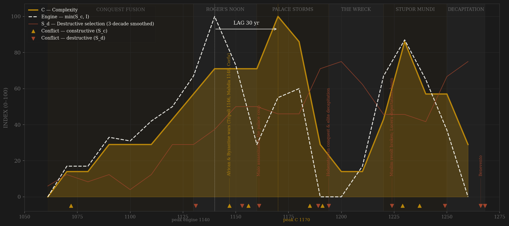
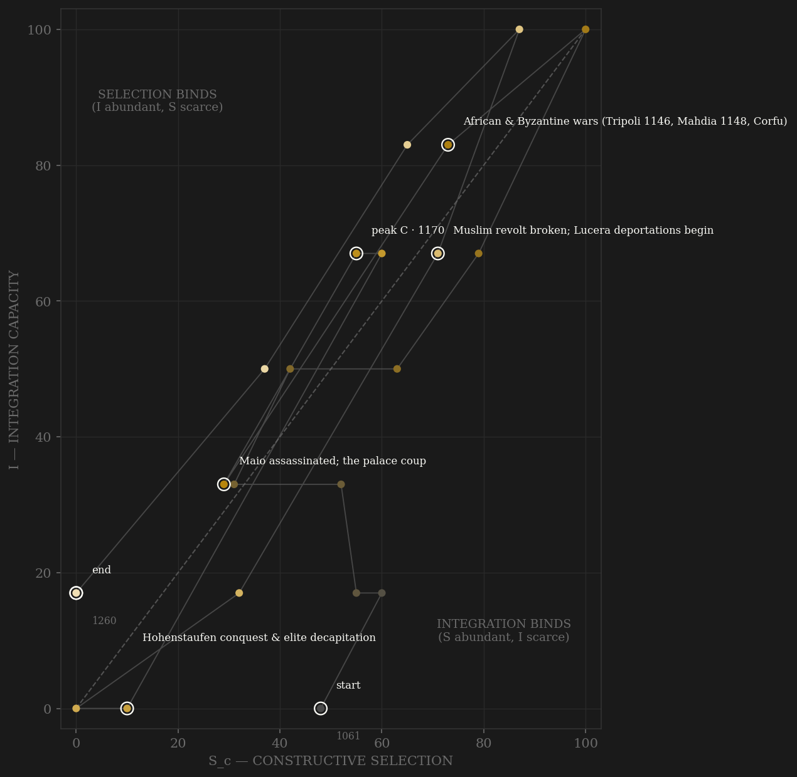

Sicily is what deliberate talent-over-identity recruitment looks like in Latin Europe's Middle Ages — because it happened exactly once. The conquerors kept Palermo's Muslim fiscal personnel in place in 1072; a Greek amiratus ran the island for a Norman child; and in George of Antioch — a Syrian Greek hired out of Zirid Mahdia on pure fiscal competence, risen to ammiratus ammiratorum — the kingdom found the showcase hire of the medieval Mediterranean. The v2 engine peaks in the 1140s: Ariano legislated, the duana reorganized on Fatimid models with its Arabic-precision cadastre, Tripoli and Mahdia taken, Corfu stormed, al-Idrisi at court drawing the era's best map of the world. Complexity answers thirty years later at Monreale — the fusion apex in stone, Ibn Jubayr's glittering, uneasy Palermo — a textbook +30 PASS. The engine never recovers its 1140s height because the state amputates its own arms: Philip of Mahdia burned in 1153, Maio murdered and the palace stormed in 1160-61 — the diwan's registers burned, the palace Saracens hunted through the streets — the pogroms of 1189-90, and Henry VI's 1194 decapitation of the trained elite. Frederick II rebuilds a SECOND ladder — Naples 1224, the first state university in Latin Europe, founded explicitly to grow judges; Melfi 1231, a salaried removable judiciary — and it is magnificent and narrower: the Greek-Arab wing is gone, deported to Lucera by the same emperor who built the university. The v1 combat series, by contrast, peaks on Frederick's total papal war of the 1230s-40s and reads the kingdom's death-struggle as its selective prime: -60 FAIL — the exact contamination the amendment was written against. Then Benevento, 26 February 1266: Manfred dead on the field, and two years later a sixteen-year-old beheaded in a Naples market square. No decline curve — an execution.

The trajectory climbs the integration axis as the conquest's pragmatic fusion becomes an administration, crosses the diagonal in Roger's reign, and reaches its high corner in the 1140s with selection and integration briefly matched — the only Latin-medieval polity in the sample to reach that corner at all. The 1161 coup knocks it down the selection axis: the machinery survives but the fusion ladder never re-opens at full width, and the trajectory spends the rest of its life below its own noon. The 1190s crash is near-vertical on both axes — civil war, conquest, anarchy — and then the Frederician loop climbs back up the integration axis (Melfi's justiciars, the augustalis, the monopolies) with selection capped: the second state is better organized and less alive than the first. It dies mid-flight, like Athens — cut down at Benevento by external decree while the machine still ran — not, like Rome, of exhaustion. The phase portrait's diagnostic: this polity never got the chance to rentier-rot; every downward move is a blade.
Coded by locus and target, never by outcome. Sicily's ledger is a study in the same enemy scoring differently by locus: Henry VI's 1191 invasion breaks at Naples — B, an external claim repelled by a functioning machine — while his 1194 conquest is S_d, core penetration under the Alaric rule, compounded by the mass blinding of the Norman elite in 1194-97. The state's violence against its own machinery is the through-line: Philip of Mahdia burned (1153) and Pier della Vigna blinded (1249) bracket the polity — the Yue Fei precedent twice, a century apart; the 1161 palace coup with its burned registers and murdered palace Saracens is the key machinery-attack exhibit of the whole wave; and the Lucera deportations are S_d BY POLICY — the state removing its own Arabic-speaking administrative-agricultural population, the Morisco precedent avant la lettre. Against these, the 1228-29 crusade shows what B-management looks like: Jerusalem recovered by treaty, while excommunicate, without a battle.
| YEAR | CONFLICT | CODE | CODING RATIONALE |
|---|---|---|---|
| 1072 | Palermo taken | Sc | Peak conquest rivalry vs the island emirs and Byzantium — and the Muslim administrative class retained in place: external contest that BUILDS the ladder (Johns chs.1-2) |
| 1131 | Great baronial revolts (1131–39) | Sd | Rainulf of Alife and Robert of Capua thrice in arms against the new monarchy — internal violence aimed at the crown's coordination claim; settled at Mignano 1139 |
| 1147 | African & Byzantine wars (Tripoli 1146, Mahdia 1148, Corfu) | Sc | Peak external contest of the fusion state — an African tributary empire and a war with Byzantium run through the trilingual duana |
| 1153 | Philip of Mahdia burned | Sd | The Greek-eunuch admiral executed for crypto-Islam with Roger presiding — the state destroying its own servant (Yue Fei precedent); the first amputation of the Arab wing |
| 1156 | Brindisi — Byzantine counter-offensive repelled | Sc | External invasion of Apulia broken in the field; Benevento treaty prices the papal contest the same year |
| 1161 | Maio assassinated; the palace coup | Sd | The Latin baronage attacks the meritocratic machinery itself: the emir of emirs murdered (Nov 1160), William I seized, the DIWAN'S REGISTERS BURNED, the palace Saracens hunted and killed (Falcandus) — the machinery-attack exhibit |
| 1185 | Thessalonica | Sc | The great Byzantine campaign takes the empire's second city — external locus, machinery untouched at home |
| 1189 | Anti-Muslim pogroms (1189–90) | Sd | On William II's death the palace Saracens and Muslim craftsmen are driven to the hills — the amputation arc resumes as mob violence |
| 1191 | Henry VI breaks at Naples | Sc | The external claim REPELLED by a functioning machine — B while it failed; Tancred's fleet even captures the empress |
| 1194 | Hohenstaufen conquest & elite decapitation | Sd | Henry VI crowned in Palermo — core penetration (Alaric rule); the Norman elite arrested, blinded, deported with the treasury to Germany 1195–97: elite decapitation (Matthew ch.17) |
| 1224 | Muslim revolt broken; Lucera deportations begin | Sd | S_d by policy: the state deports its own Arabic-speaking administrative-agricultural population from the island (~1224–46) — the Morisco precedent avant la lettre, signed by the same hand that founded the university that year |
| 1229 | The treaty crusade (1228–29) | Sc | Jerusalem recovered by pure diplomacy while excommunicate, then the papal 'Key' invasion repelled — B-management masterstroke; separate ledger row, one arc annotation (key reserved for Lucera in this decade) |
| 1237 | Cortenuova | Sc | The Lombard League broken in the field — the imperial peer contest at its height, fought north of the Regno |
| 1249 | Capaccio purge & the fall of Pier della Vigna | Sd | After the 1246 conspiracy the purge cuts into the service class; the low-born logothete blinded 1249 — the state consuming its own best servant (Yue Fei precedent, second occurrence) |
| 1266 | Benevento | Sd | Charles of Anjou kills Manfred on the field and takes the Regno — terminal core conquest (Alaric rule); the dynasty ends |
| 1268 | Tagliacozzo; Conradin executed | Sd | The sixteen-year-old heir beheaded in the Naples market — the dynasty extinguished by public execution; same-row annotation reserved for Benevento (Dutch precedent) |
| COMPONENT | GRADE | BASIS |
|---|---|---|
| S_c — channel A, elite-entry (0.40) | ○ coded on ◐ document anchors | The fusion ladder: Muslim fiscal personnel retained 1072, Christodoulos, George of Antioch hired from Zirid Mahdia c.1108, trilingual duana + jara'id 1145, Maio of Bari (new-man apex) — Johns 2002 chs.1-11, Takayama 1993; decay: Philip of Mahdia 1153, the 1161 coup, Ibn Jubayr's converting officials 1184-85, 1189-90 pogroms, 1194 decapitation; second ladder: Capua 1220, NAPLES UNIVERSITY 1224 (first state university, built to train bureaucrats — Abulafia ch.5), MELFI 1231 salaried judiciary, Pier della Vigna — capped below the 1140s fusion peak: the Greek-Arab wing deported |
| S_c — channel B, peer rivalry (0.30 HARD CAP) | ○ scholar-coded | Conquest wars 1061-91; Durazzo 1081-85; African empire + Byzantine war 1146-49; Brindisi 1156; Thessalonica 1185; Henry VI 1191 repelled (B while it failed); the German contest 1212-18; the treaty crusade 1228-29; Lombard/papal wars (Cortenuova 1237, Parma 1248, Fossalta 1249); Manfred's contest (Foggia 1254, Montaperti 1260). Core-penetration episodes excised to S_d: 1194, 1266, 1268 |
| S_c — channel C, within-rules contest (0.30) | ○ scholar-coded | Curia regis politics; Ariano 1140; the familiares contests under William I/II when bloodless (Ophamil vs Ajello); Capua/Messina assizes 1220-21; Melfi's courtroom order; the 1232 general court with city representatives (early estates). Zeroed where contest goes extra-institutional: 1161, the 1190s two-court war, the post-1239 treason regime |
| S_d — Destructive | ○ coded, event-anchored | 1131-39 revolts; Philip of Mahdia 1153; Bari razed 1156; Maio + the 1161 coup (registers burned, palace Saracens killed — Falcandus); regency coups 1166-68; pogroms 1189-90; 1190-94 civil war + 1194 conquest and decapitation; 1198-1208 anarchy; Muslim war + Lucera deportations 1222-46; Capaccio 1246 + Vigna 1249; Benevento 1266; Tagliacozzo/Conradin 1268 |
| Sc_v1_combat (frozen synthetic) | ○ scholar-coded | Channel B alone (external-war-only, the prior definition's operative content) — no v1 page ever existed; synthesized per the straight-to-v2 rule (Mughal/Gupta precedent) |
| I — Integration | ○ coded on ◐ document anchors | The diwan cadastre (jara'id 1095/1145, the 1178 Monreale jarida — Johns' catalogue = dated document anchors); trilingual chancery as integration technology; royal ports + grain-export administration; African tribute 1148-60; registers burned 1161, duana rebuilt 1170s; collapse 1194-1220; Frederician rebuild — Melfi justiciar network, augustalis gold 1231, monopolies, licensed grain export |
| C — Complexity | ○ coded on ◐ anchors | Palermo ~100-150k (Chandler-class anchors, contested); Cappella Palatina 1132, Cefalù, Martorana, MONREALE 1174-82; al-Idrisi's Book of Roger 1154 (the era's best world map, made here); tiraz silk workshops (Theban weavers absorbed 1147); Naples university 1224; scuola siciliana; De Arte Venandi and the scientific court |
| E — Entropy | ○ scholar-coded | Succession-crisis frequency (1085, 1101, 1189-94, 1197-1208, 1250-66); the 1194 plunder (treasury to Germany); the anarchy; 1240s fiscal exhaustion — annual collectae (Matthew ch.19); terminal confiscations |
| R — Renewal (population) | ○ order-of-magnitude | Regno (island + Mezzogiorno) in MILLIONS: ~2.2M → ~2.5M, Russell-class estimates; flat arc = admission of ignorance, not a demographic claim |
21 decade rows (1061 off-decade founding row, Han convention, then 1070…1260; the 1260 row carries Benevento 1266 and Tagliacozzo 1268) built by scripts/build_sicily_sicre.py — a straight-to-v2 contestability build (AMENDMENT_S_definition_v2.md): Sc_constructive = 0.40 elite-entry (the fusion ladder: retained Muslim fiscal personnel, George of Antioch, the trilingual duana, Naples 1224 + Melfi 1231) + 0.30 peer rivalry (hard cap, locus-cleaned) + 0.30 within-rules contest; Sc_v1_combat = channel B alone, synthesized per the Mughal/Gupta straight-to-v2 rule (no v1 page ever existed). Channel ledger: data/raw/sicily_norman/coding_ledger_v2.csv; audit: components_audit.csv; sources + coding decisions: data/raw/sicily_norman/SOURCES.md. FROZEN-PROTOCOL LAG UNDER BOTH DEFINITIONS (3-decade centered rolling mean, engine=min(Sc,I)): v2 engine 1140 (Roger's noon — Ariano, the reorganized duana, the African empire) → C 1170 (Monreale decade) = +30 PASS; v1 engine 1230 → C 1170 = -60 FAIL — the v1 engine peak sits on Frederick's total papal war, combat contamination read as selective prime, the exact construct-validity failure the amendment targets. SHORT-SERIES CAVEAT (21 rows < 25, Athens precedent): one 3-decade smoothing window spans ~14% of the polity's life, so peak locations are coarse; UNSMOOTHED sensitivity: v2 engine 1140 → C 1170 = +30 PASS (identical — the v2 verdict is smoothing-robust); v1 UNSMOOTHED engine 1140 → C 1170 = +30 PASS, i.e. the v1 verdict FLIPS with smoothing (-60 FAIL smoothed vs +30 PASS unsmoothed) because the 1230s-40s war plateau outweighs the 1140s spike only after averaging — the v1 series is edge-of-knife under this polity's double-peaked combat history and should carry near-zero weight; v2 is stable under both treatments. ○-HALO CAVEAT (standard for scholar-coded pages): the same historiography feeds both the S and C codings; the fusion-administration reading rests on Johns' document catalogue, which is the closest thing to a measured anchor this polity allows. Grade ○ honestly: nothing here is a measured corpus. Rebuild: ~/grove/venv/bin/python ~/vitalic.stoicism/scripts/build_sicily_sicre.py, then polity_report.py --slug sicily_norman